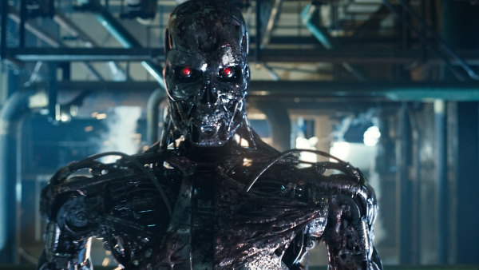

Terminator Salvation
Terminator Salvation se sitúa en el año 2018, después de que Skynet haya provocado el apocalipsis y las máquinas dominen gran parte del mundo. La resistencia humana lucha por sobrevivir bajo el liderazgo emergente de John Connor. Connor intenta organizar a los supervivientes y encontrar una forma de derrotar a Skynet. Mientras tanto aparece Marcus Wright, un hombre que despierta sin recordar su pasado.
Pronto descubre que es un híbrido entre humano y máquina creado por Skynet. En su camino conoce a Kyle Reese, un joven superviviente que será clave para el futuro. Cuando Reese es capturado por las máquinas, Connor y Marcus intentan rescatarlo infiltrándose en una base de Skynet. Finalmente Marcus se sacrifica para salvar a Connor, mientras la resistencia continúa la lucha contra las máquinas.